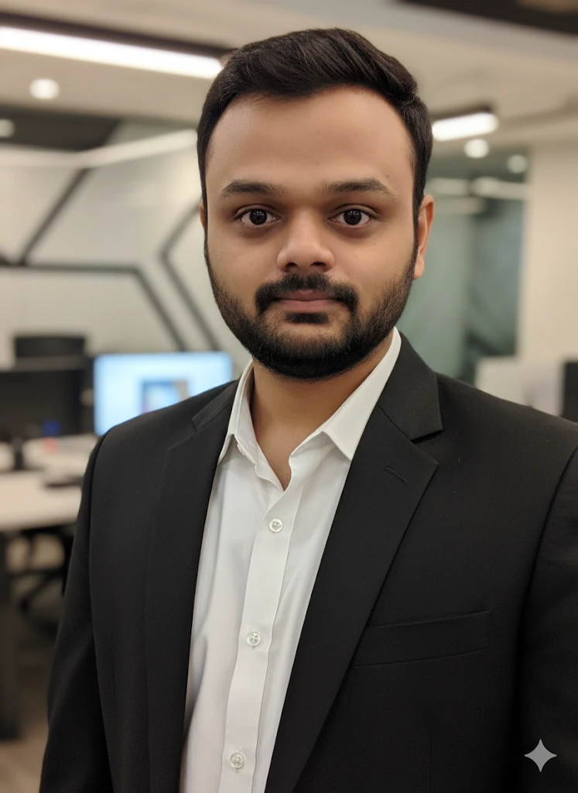
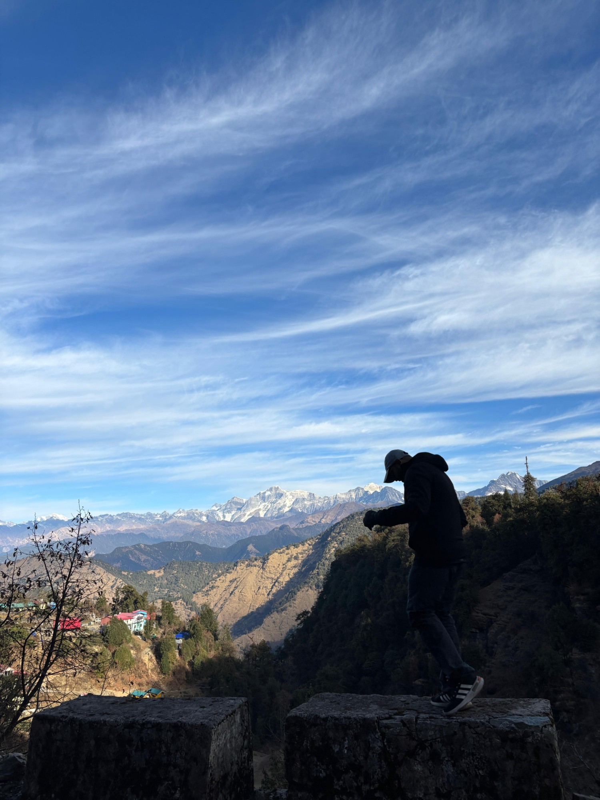
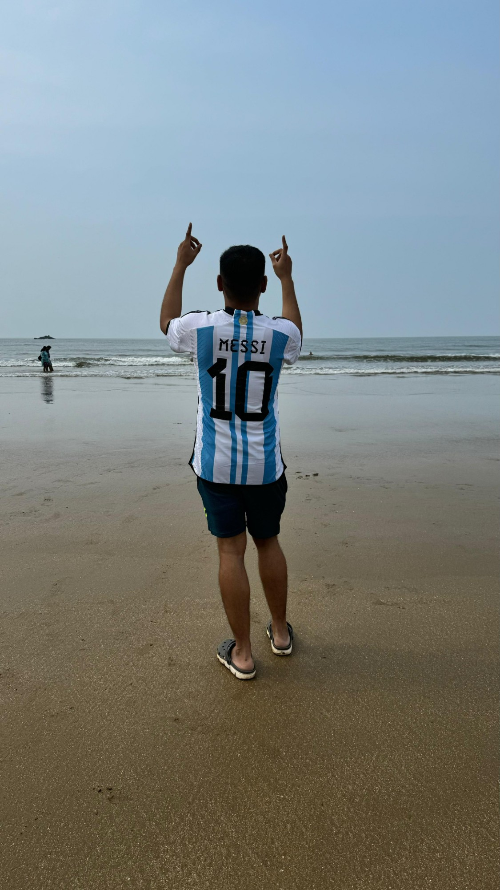
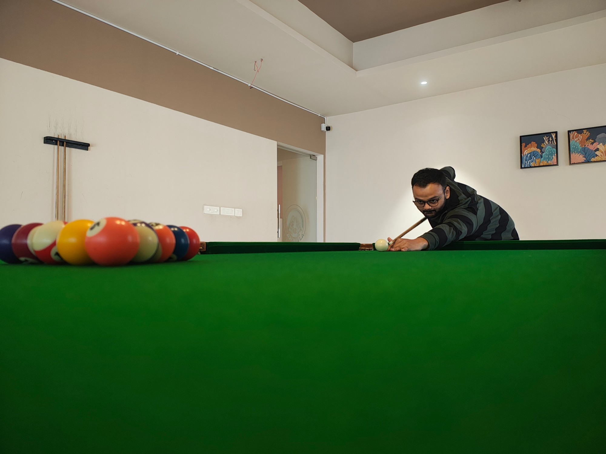

The stuff nobody puts in the syllabus.

Engineer by choice. I left a good job to prepare for UPSC, spent 1.5 years at it, and came back to tech.
This channel is everything I learned on both sides of that gap.
Long-form talks with people who took strange routes.
Interview prep, explained the way I wish someone had explained it to me.
Stories, decisions, and the uncomfortable questions about careers and lives in India.


